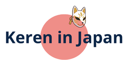

כתבות, מאמרים ומדריכים פרקטיים על יפן: ויזות, תרבות, חברה, טכנולוגיה ויום-יום.
מדריך מקיף לכל המסלולים שמופיעים במשחק Visa Finder: ויזת עבודה, ויזת בן/בת זוג, סטודנט, עסקים, דיגיטל נומאד ועוד.
דברו איתי על פרויקטים, שיתופי פעולה, או כתבות שמעניינות אתכם.